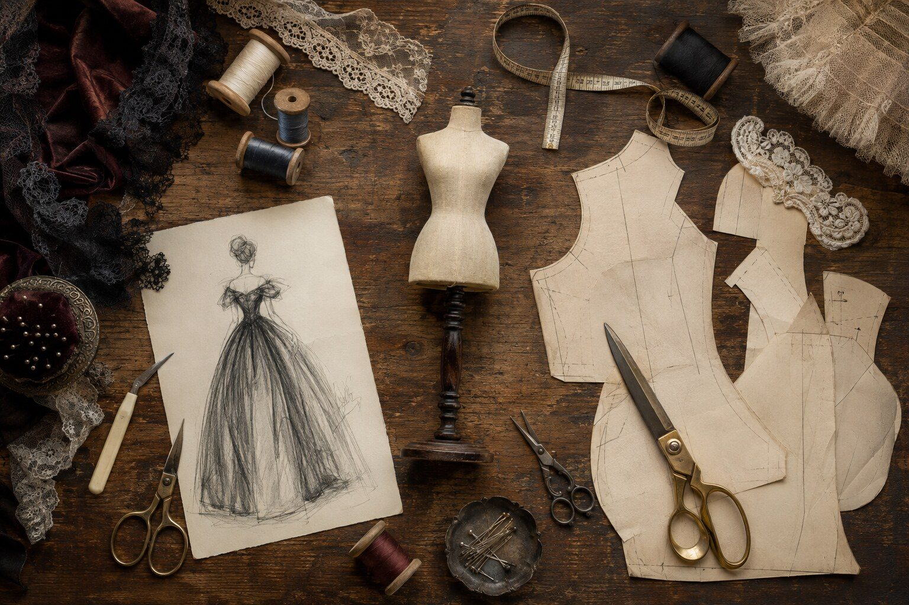
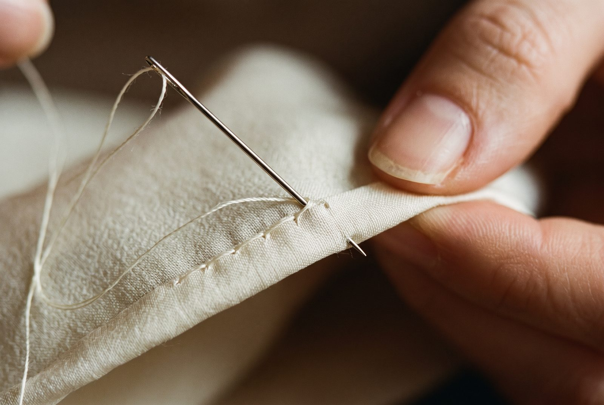

Savoir-faire майстерня
Insidethe atelier.
Six stages, the same a couture house would give a full-scale gown. Nothing is skipped because the garment is small.
Luxury at this scale is invisible until you look closely — the grain of silk, a hand-worked buttonhole, a seam pressed no wider than a breath.

The conversation
We begin with the doll herself: her maker and mould, her scale and condition, her character, and the history you wish to honour. Photographs and measurements come first; ideas follow.

The silhouette
Period references become an original hand-drawn study. Proportion is refined on paper until the silhouette belongs naturally to her era and her frame.

The paper pattern
Every pattern is drafted by hand from her exact measurements — never scaled down from a stock pattern. At this size a millimetre changes the line of a shoulder.

The toile
A cotton toile tests balance and ease before precious cloth is cut. It is fitted, marked and corrected — exactly as it would be for a client in the fitting room.

The handwork
Silks, lawns, laces and trims are shaped at miniature scale. Hems are rolled, buttonholes worked and trims set by hand, with stitches sized to the garment rather than to a machine.

The atelier record
The finished garment is photographed and documented with its materials and design notes, then wrapped in archival tissue and sent to its collector.

Atelier
vocabulary.
Materials are chosen for their behaviour at small scale: how finely they press, how they gather, how they hang on a bisque shoulder.
- Silk faille
- A softly ribbed silk with body, ideal for structured bodices and promenade skirts.
- Cotton lawn
- A fine, crisp cotton for underlayers, pintucked yokes and summer dresses.
- Batiste
- A light, semi-sheer weave used for chemises, petticoats and linings.
- Antique lace
- Period lace, chosen so its pattern reads correctly at the doll's scale.
- Silk velvet
- Deep-piled and weighty, cut carefully so the pile runs one way.
- Soutache
- A narrow braid stitched on edge to draw scrolls and borders.
- Jet beading
- Small black beads that catch candlelight, after Victorian evening dress.
- Silk ribbon
- Hand-dyed where needed, for sashes, rosettes and trimming.
Worked by hand.
Rolled hems
Edges rolled between the fingers and whipped with silk, almost invisible from the right side.
Pintucks
Fine parallel tucks that shape a bodice or yoke and catch the light.
Worked buttonholes
Hand-stitched buttonholes sized to the doll, with covered buttons to match.
French seams
Raw edges enclosed so the inside is as clean as the outside.